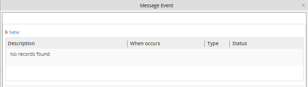

Overview
Most actions in a process are executed in response to the user, but sometimes an action needs to be executed according to a specific timing in the process. In ProcessMaker, events are actions which execute relative to the time when a task or a series of tasks begins or ends, that's why it is required to have the cron properly configured. Since events are tied to the operation of task(s), they will only be executed, if the task(s) have not yet concluded. If the selected task(s) have already finished (or the case is paused, canceled or deleted), the event will not execute.
Events can either send an email message or execute a trigger. From version 2.0 and later, three types of conditional events can be added, so events can be executed based upon the state of a particular case. In order for events to be automatically executed at the correct timing, the server running ProcessMaker will have to be configured to execute a Scheduled Task if using Windows or a cron job if using Linux/UNIX.
Note: It's important to mention that the event will be running during the execution of the task scheduled, if the task is derivated the event will be closed and it won't be executed. For instance, if an event is created to remember to a certain user that a case is on his/her inbox, the event will remember the user to open that case to check and complete it, and the event will be available during the execution of that particular case.
Also, when setting the events, weekends are not being considered in the calculation, so it won't be possible to configure the event to be executed in 2 days without included the weekends, the event will include also the weekends. Form version 2.5.2, the functionality to omit the weekends was added, so basically you have to create a new Calendar specifying the days your event will consider.
Types of events
From version 2.0 and later, events have been reorganized into three types:
 An Intermediate message event is used to send an email notification.
An Intermediate message event is used to send an email notification. An Intermediate Conditional event executes a trigger, depending on a condition.
An Intermediate Conditional event executes a trigger, depending on a condition. An Intermediate timer event executes a trigger defining either a Single or Multiple task.
An Intermediate timer event executes a trigger defining either a Single or Multiple task.
Creating an Event
To create a new event, right click on a blank area in the process map and choose Events from the dropdown menu and the three options will display:

Choose one depending on the requirements and click on the New link at the upper left corner of the list.

Creating Intermediate Message Event

Event Message
- Description: A description of the event, which is how the event will be identified and displayed in the list.
- Status: Set to “Active” for the event to go into effect. To disable the event, set to “Inactive”.
Behaviour
- Type: Select whether the event's timing will be set in relation to a “Single Task” or “Multiple Tasks”. If the latter, then the event's timing can span multiple consecutive tasks in the process.
- The time starts with task: Select the starting task from which the event will be timed.
- To: If the option "Multiple Tasks" was selected, then also select the ending task.
- Estimated Task duration: Enter the anticipated amount of time in days which will pass before the task or tasks are completed. If fractions of days are needed, decimal numbers can be used. For example, for a time 4 hours, enter "0.17" (4/24). For 45 hours, enter "1.88" (45/24).
- Execution time: Enter the number of days relative to the beginning or end of the task when the event will be executed. This can be set to either a positive or negative number of days, which are counted either from the start or end of the interval. The timing can be a decimal number, so 6 hours would be "0.25" (6/24). If you set "0" it means that the event will be executed right "After interval ends" or "After interval starts", depending on what is chosen next, with no interval time to wait.
- Select whether the timer will begin counting "After interval ends" or "After interval starts".
Graphical representation of the timer
The timer setting can be confusing. To visually verify when the event will be executed releative to the timing of the selected tasks(s), look at where the clock icon appears in the timeline.
No event can be before the starting task, since ProcessMaker has no idea when the starting task will begin in absolute time. If a negative number is used to set the timing before the starting task, the clock icon will disappear from the graphical representation, indicating that the timing is impossible.
Note: PHP's GD library has to be installed in order for the graphic representation of the timer to be displayed.
Examples:
- If an event has an Interval Time of 5 days and its Timer is set to 8 days "After the interval starts", then event is anticipated to execute 3 days after the end of the task(s).
- If an event has an Interval Time of 7 days and its Timer is set to -3 days "After the interval ends", then event is anticipated to execute 4 days after the first task begins.
Configuring a Send Message Event

Define the properties of the email to be sent:
- Subject: The subject of the email.
- Send To: Select who will receive the email will be sent to. It has the following options:
- To add the email of a user who is not a registered user, enter their email address in the textbox at the top of the list and click on . (Only their email addresses will be accepted and not their names.)
- The (Current Task User) can be added to the Send To list by clicking on
 (which is already selected by default).
(which is already selected by default). - To add a ProcessMaker user, click on
 and select a user to add to the list.
and select a user to add to the list. - To remove email recipient(s) from the Send To list, select one or more recipients and click on .
- To add everyone in a ProcessMaker group, click on
 and select the group to add to the list.
and select the group to add to the list. - To add a variable click on and a new window with the list of all dynaforms will display
- Carbon Copy: Add email addresses or users to receive an exact copy of the email.
- Blind Carbon Copy: Add email addresses or users to receive a blind carbon copy of the email, which means that the other recipients will not be informed that the BBC recipients were sent the email.
- E-Mail Template: Select one of the HTML template files which will form the body of the message. If the template file contains system and case variables they will be automatically inserted. New email template files can created by right clicking on the Process Map and selecting Process File Manager from the menu.
When done defining the email properties, click on Save.
Creating Intermediate Conditional Event

Event Message
- Description: A description of the event, which is how the event will be identified and displayed in the list.
- Status: Set to “Active” for the event to go into effect. To disable the event, set to “Inactive”.
Behaviour
- Type: Select whether the event's timing will be set in relation to a “Single Task” or “Multiple Tasks”. If the latter, then the event's timing can span multiple consecutive tasks in the process.
- Type: Select whether the event's timing will be set in relation to a Single Task or Multiple Tasks. If the latter, then the event's timing can span multiple consecutive tasks in the process.
- The time starts with task: Select the starting task from which the event will be timed.
- Estimated Task duration: Enter the anticipated amount of time in days which will pass before the task or tasks are completed. If fractions of days are needed, decimal numbers can be used. For example, for a time 4 hours, enter "0.17" (4/24). For 45 hours, enter "1.88" (45/24).
- Execution time: Enter the number of days relative to the beginning or end of the task when the event will be executed. This can be set to either a positive or negative number of days, which are counted either from the start or end of the interval. The timing can be a decimal number, so 6 hours would be "0.25" (6/24). If you set "0" it means that the event will be executed right "After interval ends" or "After interval starts", depending on what is chosen next, with no interval time to wait.
- Select whether the timer will begin counting "After interval ends" or "After interval starts".
- Execute Trigger: Select the trigger who will be executed with the event. Triggers available will be the ones who were created during the process.
- Condition: Write a condition for the trigger execution.
Click on Continue and the window with the trigger script will open:

It is possible to add code to be executed on the trigger script.
Creating Intermediate Timer Event

Event Message
- Description: A description of the event, which is how the event will be identified and displayed in the list.
- Status: Set to “Active” for the event to go into effect. To disable the event, set to “Inactive”.
Behaviour
- Type: Select whether the event's timing will be set in relation to a “Single Task” or “Multiple Tasks”. If the latter, then the event's timing can start from one task to another.
- The time starts with task: Select the starting task from which the event will be timed.
- To: If the option "Multiple Tasks" was selected, then also select the ending task.
- Estimated Task duration: Enter the anticipated amount of time in days which will pass before the task or tasks are completed. If fractions of days are needed, decimal numbers can be used. For example, for a time 4 hours, enter "0.17" (4/24). For 45 hours, enter "1.88" (45/24).
- Execution time: Enter the number of days relative to the beginning or end of the task when the event will be executed. This can be set to either a positive or negative number of days, which are counted either from the start or end of the interval. The timing can be a decimal number, so 6 hours would be "0.25" (6/24). If you set "0" it means that the event will be executed right "After interval ends" or "After interval starts", depending on what is chosen next, with no interval time to wait.
- Select whether the timer will begin counting "After interval ends" or "After interval starts".
- Execute Trigger: Select the trigger who will be executed with the event. Triggers available will be the ones who were created during the process.
- Condition: Write a condition for the trigger execution.
Click on Continue and the window with the trigger script will open. It is possible to add code to be executed on the trigger script.
Executing cron.php
If a cron hasn't been programed to be executed, then it is possible to execute it manually. Execute the cron as the image below, and the characteristics for the event set will display:

Events log
Checking Events log on the Database
The list and status of events executed will be found on wf_<WORKSPACE> APP_EVENT table. In that table it is possible to check if an event as executed or not.
Checking Events log on ProcessMaker
From version 2.0.44 an event log was added inside Administration tab, only users with PROCESSMAKER_ADMIN and PROCESSMAKER_MANAGER role will have access to the event log
When the event is executed, log is stored at ADMIN > Settings > Log > Events

Where:
- Process: it displays the name of the process.
- Tasks: it displays the name of the task where the event was executed.
- Case Title: Title or number of the case where the event was executed.
- Action Date: date when the task where the event was scheduled was executed.
- Last Execution: date when the cron was executed.
- Event Type: Type of the event executed.
- Status: Status of the event. Possible status:
- OPEN: if the event is still on execution.
- CLOSE: If the event was executed successfully.